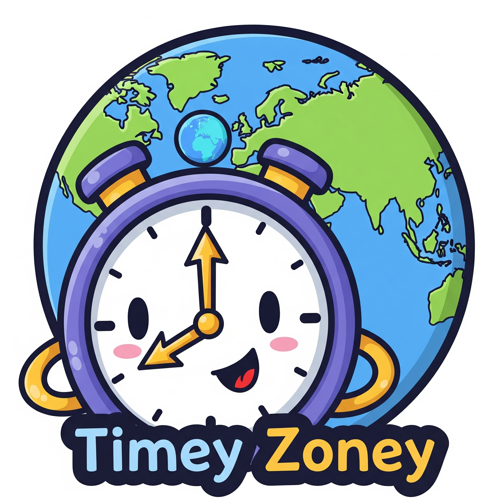

Timey Zoney
A Discord Bot for Automatic Timezone Management
Description
This Discord bot automatically appends UTC offset information to user nicknames (e.g., (UTC+2) or (UTC-5)) and handles daylight saving time changes automatically. Users set their timezone once, and the bot keeps their nickname updated across all servers where the bot is present.
Core Features
- `/timezone
` : Set your timezone (e.g., `/timezone America/New_York`). - Automatic nickname updates: Bot appends
(UTC±X)to your nickname. - Multi-server support: Your timezone follows you across all servers with this bot.
- Daylight saving time handling: Automatic updates when DST changes occur.
- `/time @user`: View another user's current time (ephemeral response).
- `/timezone delete`: Remove all your data from the bot (GDPR compliance).
Technical Implementation
The bot is built with discord.js and uses a SQLite database to persist user data. Timezone calculations and DST handling are managed by libraries like Luxon. It employs a robust strategy for nickname monitoring and hourly checks for DST changes to ensure all users' nicknames are always up-to-date.